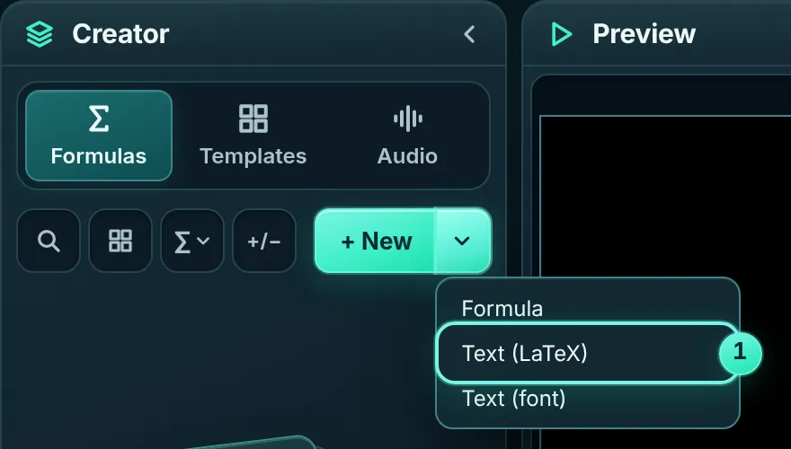
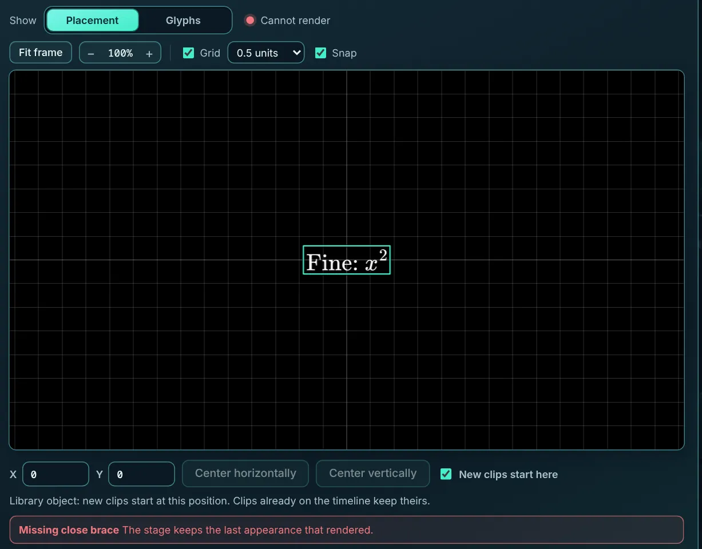
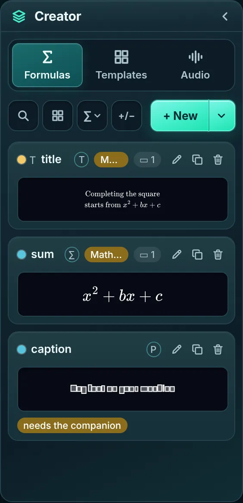
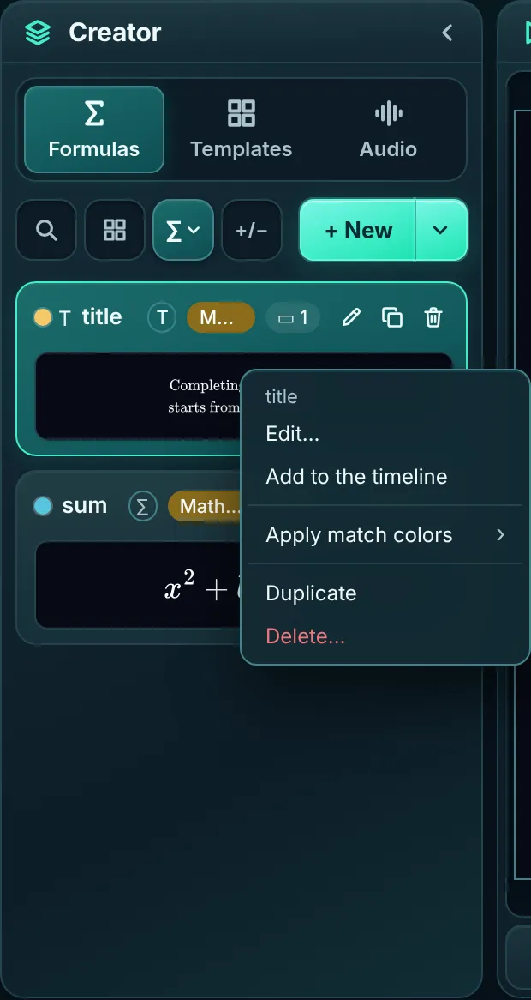
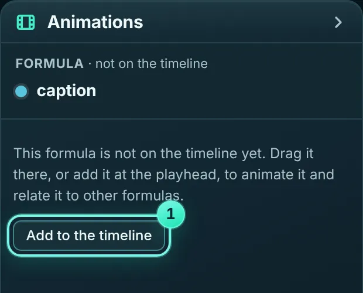
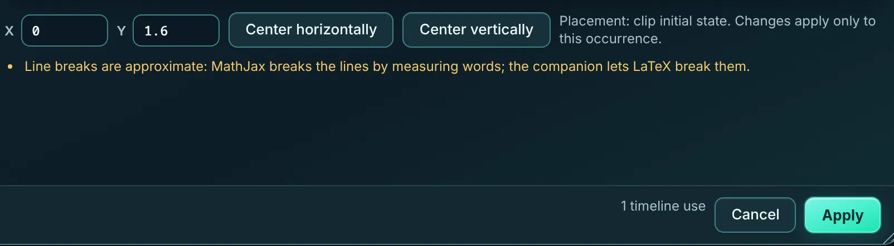
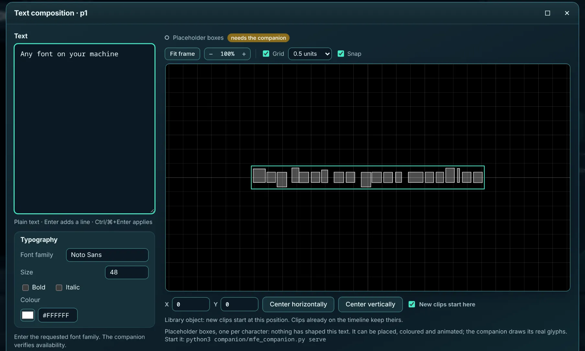

LaTeX texts and font texts
A formula is mathematics. A text is words: a title, a caption, a note, with some mathematics inside it if you want. The editor has two kinds of text, and one place to write both: the composition editor.
Two kinds of text
| LaTeX text | Font text | |
|---|---|---|
| You write | LaTeX in text mode: $x^2$ for maths, \\ for a line break, a blank line for a paragraph. | Plain text in any font. Enter adds a line. |
| Marked in the Creator by | T | P |
| Drawn by | LaTeX, when the companion runs; MathJax otherwise. | Pango, when the companion runs. Without it, as placeholder boxes. |
| Its form has | Size, colour, width, alignment, line spacing, name, tag and Appears with. | Font family, size, bold, italic and colour. |
| Glyph colours in the editor | In the Glyphs view: each glyph coloured or hidden at the start. | One colour for the whole text. |
Use a LaTeX text when the words have mathematics in them, or when you want the look of LaTeX. Use a font text for a typeface that LaTeX does not have.
Making a text
The + New button of the Creator makes a formula. Its arrow lists every kind of object: Formula, Text (LaTeX) and Text (font). Choose one of the texts and the composition editor opens.

Nothing is added to the Creator until you press Apply. Cancel leaves nothing behind.
The composition editor
The editor is a dialog with a form on the left and a stage on the right: the video frame, in which the text is drawn and placed. It is the same for both kinds, with the fields of each kind in the form.
Maximise the dialog, or drag its corner, and it gives its room to the stage, which stays whole at the frame’s aspect ratio, and to the text field.
Writing a LaTeX text
Type in the Text field. The text is in LaTeX’s text mode: ordinary words, with $…$ around a piece of mathematics, \\ to break a line, and a blank line to start a paragraph. Ctrl+Enter applies from the keyboard.
The stage draws the text a moment after you stop typing. The line over the stage says how many glyphs it has and who drew them: 41 glyphs · MathJax in the browser alone, 41 glyphs · exact (LaTeX) when the companion typesets it.
Size and colour
Size is one number written twice: the Scale and Manim’s Font size, with the scale times 48 equal to the font size, so 1.5 × 48 = 72. Type either, or a fraction such as 3/2 for the scale. Colour is a hexadecimal colour for the whole text.
Layout
The layout decides how the lines of the text sit in a block.
- Width is the width of the block in scene units. Empty means “as wide as the text comes”. The frame of a 16:9 project is 14.2 units wide, and the field says the frame’s width of your project beside it.
- Align sets how the lines sit inside the block: Left, Centre or Right.
- Line spacing is a factor of the normal distance between lines, from 0.5 to 3.
The text as an object
The Object group holds what the text is in the Creator: its Name (a name already in use is refused when you leave the field), its Tag (a colour and a short icon) and Appears with, the intro its new clips start with. A clip that still has the previous intro follows when you change it.
The stage and the position
Drag the text on the stage to place it. Two boxes above the stage help: Grid draws a grid, whose spacing you choose from 2 down to 0.1 units, and Snap makes the text stick to the lines of the frame. The text snaps to the grid as well. Hold Ctrl while you drag to move without snapping. The arrow keys, with the stage focused, move the text by 0.1 units, and with Shift by 1.
Under the stage, X and Y give the position in scene units, and Center horizontally and Center vertically bring the text to the middle of the frame along one axis.
Fit frame, the zoom and the pan change what you see of the stage without changing where the text is placed. Zoom with − and + or with Ctrl and the wheel (or with a pinch on the trackpad), and pan with the middle button or with Alt held while you drag.
New clips start here
A text opened from the Creator is a library object: no clip is being edited, so the stage places nothing on the timeline. It shows where the new clips of the text will start. The box New clips start here is ticked whenever the editor opens. With it ticked, Apply keeps the position in the text: every clip of it that you drop on the timeline or add from a menu afterwards starts there instead of at the centre of the frame. Clips already on the timeline stay where they are.
Untick the box and the position is only somewhere to look at the text: it is not saved, and the text keeps the start position it already had. To start at the centre again, set X and Y to 0, or press both centre buttons, and apply.
The position of a clip itself belongs to that clip. Moving one clip does not move the others, and it does not change where the text’s next clip starts.
The status line, the dot and the strip
The dot beside the line over the stage tells what the render of your draft is doing:
- amber while the text is being rendered again (the last appearance stays on the stage meanwhile);
- green when what is drawn is current;
- red when the text was refused;
- hollow when there is nothing to draw.
While you type, the words beside the dot stay as they are and the stage does not move: only the dot changes. What the renderer says goes into a strip under the stage, of a fixed height, scrolled when it is long: the error LaTeX gave with its log, warnings such as approximate line breaks, or the fontenc line that accented letters need, and the reason Apply waits, if it does.

Glyph colours
For a LaTeX text, the switch over the stage shows Glyphs in place of Placement: the glyphs of the draft, to colour or to hide at the start, as in the formula editor. Click a glyph, Shift+click for a range, Ctrl+click to add or remove one, or drag a box over several; then press a colour. Clear colours takes them away, and Hide, Show and Show all set which glyphs are hidden at the start.
What you colour stays with its glyphs while you go on typing or change the layout. Apply writes the colours with the text, and carries along the pairs, blocks and attachments that name glyphs of the text. Colours need a text that renders: while it does not, Apply waits, and a line says why. Where a change cannot be followed glyph by glyph, the view says so, and the text keeps the colours it had. See Colouring glyphs and objects for the other ways to colour.
Apply, Cancel and Add to the timeline
Apply makes the text an object of the Creator, or updates the one you opened, as a single undo step: its text, its layout, its colours and its position go back with one Ctrl+Z. Cancel throws the draft away. A click outside the dialog does neither: it stays open.
Everything you type or place stays in a draft until Apply. While the editor is open, playback pauses and does not start again by itself, and Save, Open and Export wait: apply or cancel first, then run the command again. If the tab closes with a draft unapplied, the editor offers Recover unapplied draft the next time you open that text.
Apply puts nothing on the timeline: the text is in the Creator, ready to use. The line at the left of the footer says so for a new text: New library object · no clip will be added. Putting a clip on the timeline is a separate step, with the text selected in the Creator.

- Drag its card onto the timeline.
- Right-click its card and choose Add to the timeline.
- Select the card and press Add to the timeline in the Animations panel, which adds a clip at the playhead.


Editing a text again
Open a text that exists in any of four ways: double-click its card in the Creator, double-click its clip on the timeline, double-click the text itself in the Preview, or select two or more clips of it, right-click and choose Edit….
What the stage places depends on where you came from. From the Creator, or from several selected clips, the text is a library object, with New clips start here. From one clip or from the Preview, the stage places that clip, and the box is not there. The line under the stage says Placement: clip initial state. Changes apply only to this occurrence.

The text itself, with its layout and its colours, is shared by every clip that uses it. Change it and every clip changes, the position of each clip aside. When a text has more than one use and you opened it from a clip, Make independent on Apply gives that clip a copy of the text of its own, and Apply changes only the copy.
Font text
A Text (font) is plain text in a typeface you name. Its form has the Font family, the Size (the font size, from 4 to 512), Bold, Italic and the Colour of the whole text. The stage and its controls are the same as for a LaTeX text.
A font text needs the companion to be drawn with its real glyphs. The companion shapes the text with Pango, in the fonts of your machine, and proposes the families it has as you type the name. In version 1.0 it does this on Linux only: on macOS and Windows a font text stays as boxes. Without it, a font text is drawn as placeholder boxes: one box for each character, laid out with the font the browser has under that name. The badge needs the companion says so, in the editor and in the Creator.

A font text drawn as boxes still works like any other object. You can compose it, place it, colour it, give it an intro and animate it. The project saves, opens and exports. Export ▸ Python — ManimCE… (or Python — ManimGL…) writes the text and counts its glyphs one for each character, and says so. A video exported in the browser shows the boxes, as the Preview does.
When the companion shapes the text, its real glyphs take the place of the boxes and keep what you did to them. The shape it found is saved in the project, so a project with font text opens with its real appearance even on a machine without the fonts or the companion. Refresh appearance accepts a new shape on purpose, after you change fonts or versions: reconnecting the companion never replaces a saved shape by itself.
What the export writes
A LaTeX text is exported as a Tex object. Its width becomes a \parbox, and its alignment \centering, \raggedright or \raggedleft:
title = Tex(r"\parbox{120.45pt}{\centering Completing the square starts from $x^2 + bx + c$\par}", font_size=72)The glyphs are matched to the editor’s by position, as for every formula. The generated Python explains how.
A font text is exported as a Manim Text, with the family, the size, the weight and the slant you chose. Right after it the file checks the text: if Manim draws it with a different number of glyphs than the editor counted, because fonts or versions differ, it prints a warning on stderr and renders the scene all the same.
caption = Text(r"Any font on your machine", font=r"DejaVu Sans", font_size=96, weight=r"BOLD", slant=r"NORMAL", disable_ligatures=False)
_mfe_verify_text(caption, r"caption", "ce", 20)A font text is shaped for the Manim library the project targets. An export for the other library writes the same text at a converted size, and says what may differ: the size by a few percent, the spacing of lines and tabs.
The export never waits for the companion over a text. It lists the texts the editor cannot vouch for, because there is no companion to compare the fonts of this machine with, and goes on.
Where to go next
- The template library starts a formula from one of 257 ready-made ones, by filling in its placeholders.
- Colouring glyphs and objects covers the other ways to colour glyphs.
- The companion draws exact LaTeX glyphs and the real glyphs of a font text.